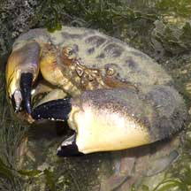
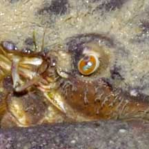
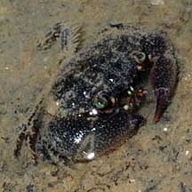
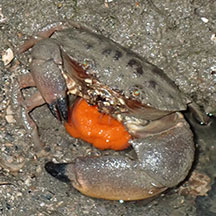
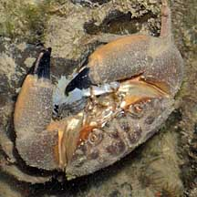
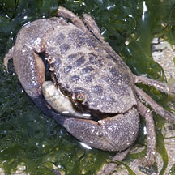
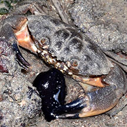
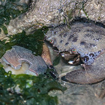
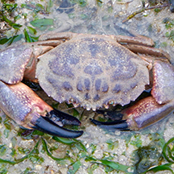

|
|
| crabs text index | photo index |
| Phylum Arthropoda > Subphylum Crustacea > Class Malacostraca > Order Decapoda > Brachyurans > Family Menippidae |
| Stone or Thunder crab Myomenippe hardwickii Family Menippidae updated Dec 2019
Where seen?This sturdy crab is commonly seen on our Northern shores near freshwater sources, in rocky and rubbly area. Features: Body width 10-12cm, smaller ones also often seen. Body oval, edge with four blunt points or 'teeth' which are not very obvious. Upper side drab grey or brown, underside dull orange. Large pincers smooth (no pimples) with black tips. One pincer is enlarged with a large molar-like tooth at the base of the finger. Walking legs sparsely hairy. It is identified by bright green eyes, often circled with red. |
 Pulau Sekudu, Jan 05 |
 Pulau Sekudu, Jan 05 |
 Green eyes ringed with red. |
| Steady crab: When a stone is overturned,
other crabs usually madly dash out helter skelter. The stone crab
merely tucks its limbs under its body and remains motionless. In this
way, predators overlook it as they they are distracted by the more nervous
crabs. It is also called the Thunder crab because of the mistaken belief that if the crab pinches you, only a clap of thunder will make it let go. This is of course untrue. To make any crab let go of your finger (or any other body part), place its walking legs gently on the ground, somewhere near a hiding place. It will shortly let go and run into the hiding place. It is best, in the first place, not to handle crabs so that they don't pinch you at all. |
|
 A tiny juvenile. Pasir Ris Park, Jul 08 |
 With eggs Pulau Ubin (South), Jun 25 |
| What does it eat? The stone crab
eats snails and clams, crushing their shells with its powerful pincers. Sightings also suggest that the crab may scavange on dead animals such as fishes and jellyfishes. One was also seen eating a seahare. Sometimes mistaken for the Red egg crab (Atergatis integerrimus) and Maroon stone crab (Menippe rumphii). Here's more on how to tell apart big crabs with big pincers seen on the rocky shores and coral rubble. |
 Eating a jellyfish Beting Bronok, May 06 |
 Eating something shredded. Changi, Jun 08 |
 Clinging onto a clam. Pulau Sekudu, May 12 |
 About to eat a cowrie? Beting Bronok, Jul 20 Photo shared by Loh Kok Sheng on facebook. |
| Stone crabs on Singapore shores |
On wildsingapore
flickr
|
| Other sightings on Singapore shores |
 Working on the Mactra clam next to it? Pasir Ris, Sep 20 Photo shared by Jonathan Tan on facebook. |
 Cyrene Reef, Feb 16 Photo shared by Juria Toramae on facebook. |
|
Links
|